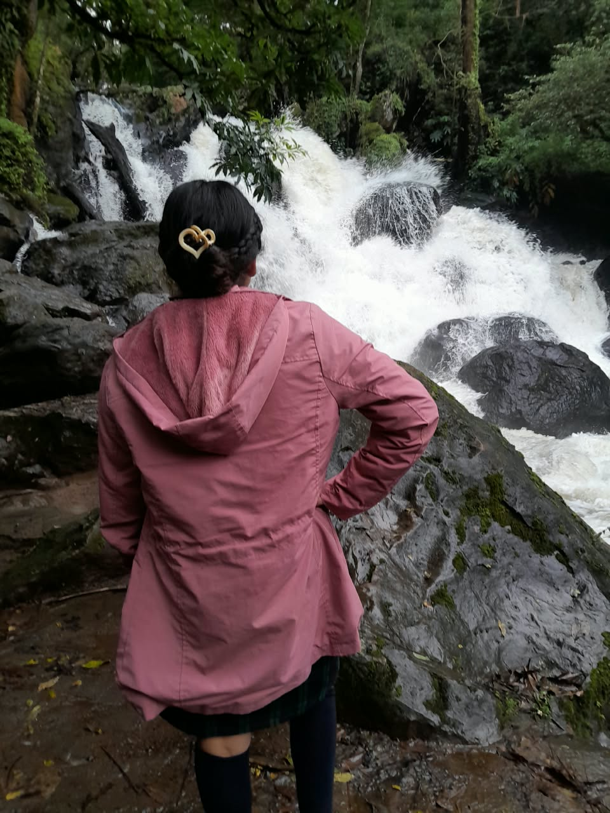

Es un bello atractivo natural, perfecto para disfrutar del sonido que produce la caída del agua sobre las rocas. Se trata de un paraje ideal para disfrutar del aire fresco que producen los pinos y los oyameles, o para caminar por senderos y escalinatas, que te permitirán adentrarte en la vida natural de la región.
La cascada y río El Molino no sólo ofrecen un hermoso paisaje natural, también hallarás las comodidades de un buen hospedaje; pues el lugar cuenta con restaurante, plazas y todos los servicios necesarios para disfrutar tu estancia en Valle de Bravo.
¡Prepárate para el espectáculo que estás a punto de presenciar! No olvides tu cámara fotográfica, ni los instrumentos para hacer una carne asada. Una vez aquí, tampoco olvides llevarte un recuerdo hecho por las manos de los artesanos mazahuas de este Pueblo Mágico.
INFORMACION PRINCIPAL

Escondida entre la exuberante vegetación, la Cascada Piedra de Molino es una parada refrescante con charcas cristalinas y una estruendosa caída. Sigue el camino, siente las gotas de agua y quédate para tomar fotos cuando la luz incida en la neblinas
Actividades y características
Senderismo y caminatas: Puedes llegar mediante rutas a pie desde el pueblo o recorridos cortos por el río. En la plataforma AllTrails se detallan rutas de senderismo y paseo de baja dificultad.Cercanía a otras atracciones: Está conectada con senderos que llevan hacia otras zonas naturales como el río El Molino y la cascada Refugio del Salto.Servicios: En los alrededores hay restaurantes, zonas de descanso y espacios familiares como Casa El Molino Restaurante
HORARIO
Abierto las 24 horas
OPINIONES
La gente dice dice que esta cascada ofrece un paisaje natural y hermoso, con un sonido relajante de la caida del agua y con oportunidades paras hacer senderismo y tomar fotos. Destacan su fácil accesibilidad, y muchos mencionan que esta al lado de la carretera y que la entrada es gratuita. Aprecian el ambiente limpio y la oportunidad de conectar con la naturaleza.

El recorrido que tome me encanto por la experiencia de sentir el agua cayendo en el rostro, me encanta por que el lugar es muy tranquilo, el agua no esta contaminada y el sonido que produce es muy satisfactorio.